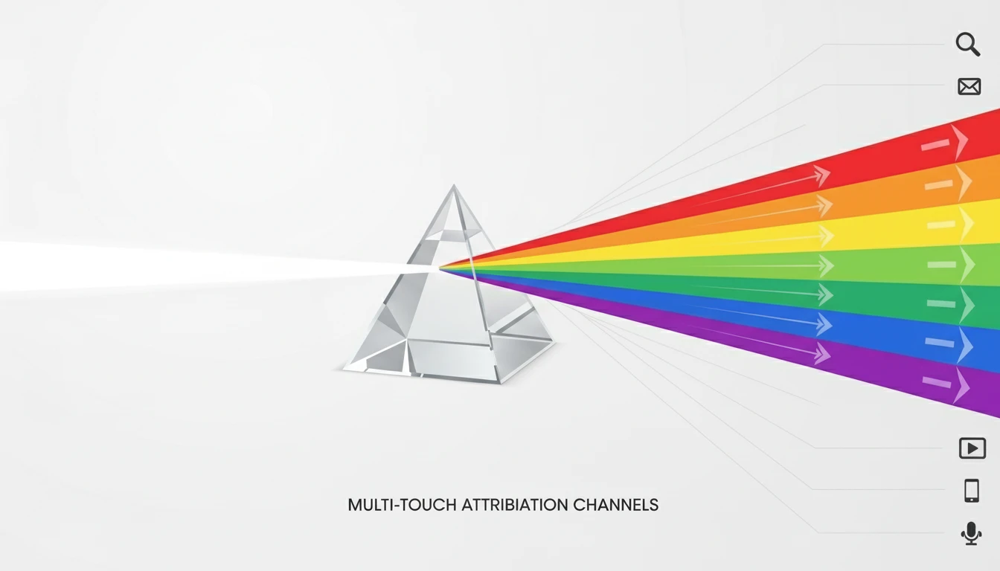

Understanding Marketing Attribution: Complete Guide to Attribution Models

A customer sees your Facebook ad, clicks a Google ad, reads three blog posts, then finally converts. Which channel gets credit for the sale? That's where attribution comes in.
Here's how to understand it.
What is Marketing Attribution?
Marketing attribution is the process of assigning credit for conversions to the touchpoints that influenced the customer journey. It answers the question: "Which marketing channels actually drove this sale?"
The 5 Main Attribution Models
1. First-Touch Attribution
What it is: Gives 100% credit to the first touchpoint.
Example: Customer sees a Facebook ad (first touch), then clicks a Google ad, then converts. Facebook gets all the credit.
Best for: Measuring awareness and top-of-funnel campaigns.
Problem: Ignores everything that happened after the first interaction.
2. Last-Touch Attribution
What it is: Gives 100% credit to the last touchpoint before conversion.
Example: Customer sees a Facebook ad, reads a blog post, then clicks a Google ad and converts. Google gets all the credit.
Best for: Measuring bottom-of-funnel performance.
Problem: Overvalues the last click and ignores the journey.
3. Linear Attribution
What it is: Splits credit equally across all touchpoints.
Example: Customer interacts with 4 channels. Each gets 25% credit.
Best for: Long sales cycles where every touchpoint matters.
Problem: Treats all interactions as equally valuable (they're not).
4. Time-Decay Attribution
What it is: Gives more credit to touchpoints closer to the conversion.
Example: First touch gets 10%, second gets 20%, third gets 30%, last gets 40%.
Best for: Campaigns where urgency matters (sales, promotions).
Problem: Undervalues early-stage awareness efforts.
5. Data-Driven Attribution (Algorithmic)
What it is: Uses machine learning to assign credit based on actual performance data.
Best for: Businesses with enough conversion data (Google Ads requires 15,000 clicks + 600 conversions in 30 days).
Problem: A black box—you don't know exactly how credit is assigned.
Which Model Should You Use?
It depends on your goals:
- Building awareness? First-touch.
- Closing deals fast? Last-touch.
- Long sales cycle? Linear or time-decay.
- Enough data + want accuracy? Data-driven.
The Truth: No Model is Perfect
Every attribution model is a simplification. The real customer journey is messy. Instead of relying on one model, use multiple views:
- Check first-touch to see what's driving awareness
- Check last-touch to see what's closing deals
- Use data-driven if you have the volume
Combine this with marketing analytics to get a complete picture of ROI.
Conclusion
Attribution isn't about finding the "truth"?it's about getting a better understanding of what's working. Start simple, then graduate to more advanced models as you scale.
Ready to build your strategy? Learn how to create a content marketing strategy.